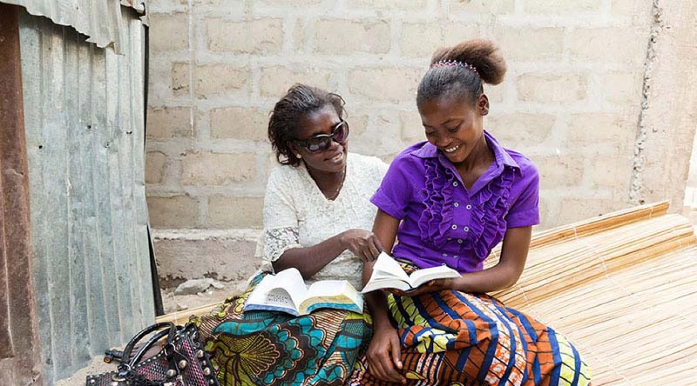

Enhance Your Training Experience
Access essential training materials and resources for BYU-Pathway missionaries.
Get StartedTraining Materials
Explore comprehensive video tutorials, step-by-step guides, and essential resources to support new missionaries. Whether you're learning the basics or refining your skills, these materials will help you serve with confidence.
Resources
Download training manuals, guides, templates, and other essential documents to support your missionary efforts.


Frequently Asked Questions
Training videos are available in the "Training" section. Watch an introductory video below:
Visit the Resources section to access the referral form, or submit it directly below:
For more information, check the FAQ page.